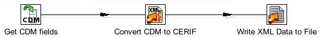

This is an iframe, to view it upgrade your browser or enable iframe display.
Prev
Next
9.4.3. Write to CERIF XML

Figure 9.3. The write to CERIF XML transformation
This transformation takes the data made available from the
Read HR Database
transformation and serialises it to CERIF XML. The
Convert CDM to CERIF
step also validates the generated XML against the CERIF schema.
Prev
9.4.2. Read HR Database
Up
Home
Next
9.5. Running the job from the command line